Chapter 6 - Visualizing data
Exploring with visualizations
One of the most widely used package for data visualization in R is called ggplot2 (https://ggplot2.tidyverse.org). It has a bit of a learning curve but it is extremely powerful and can visualize almost anything. The R for data science book by (wickham2016b?) has a chapter on ggplot2, and the same author also wrote an entire book on ggplot2 (wickham2016a?), which I also recommend. The book Data visualization: a practical introduction book by (healy2018?) is another good resource. These books cover a lot of ground on how to write code to visualize data in R, but ultimately, an understanding of of the fundamentals of data visualization (what does a good visualization look like?) is also an invaluable asset for you as a data scientist. For that, I recommend the Fundamentals of data visualization book by (wilke2019?).
This chapter draws from these resources to provide a short introduction to visualizing data with ggplot2. First we will explore the ggplot syntax, and then explore different types of visualizations with some example and some exercises.
the ggplot syntax
The minimum requirements to make a plot is data, an aesthetic argument aes(), and a geometric object geom(). Just like the pipe (%>% ) is used to build R statements layer by layer, ggplot uses the same principle, but using the plus sign “+” to add layers to the plot. Let’s construct a basic dot plot to see how it works.
# if tell R to just plot the data, it produces nothing
# because we did not provide information on the dimensions of the graph (x and y axis)
# or how to show the data in the graph.
ggplot(mpg)
# So now we use aes() to tell R what variables we want to use for the x and y axes.
ggplot(mpg) +
aes(x=displ, y=hwy)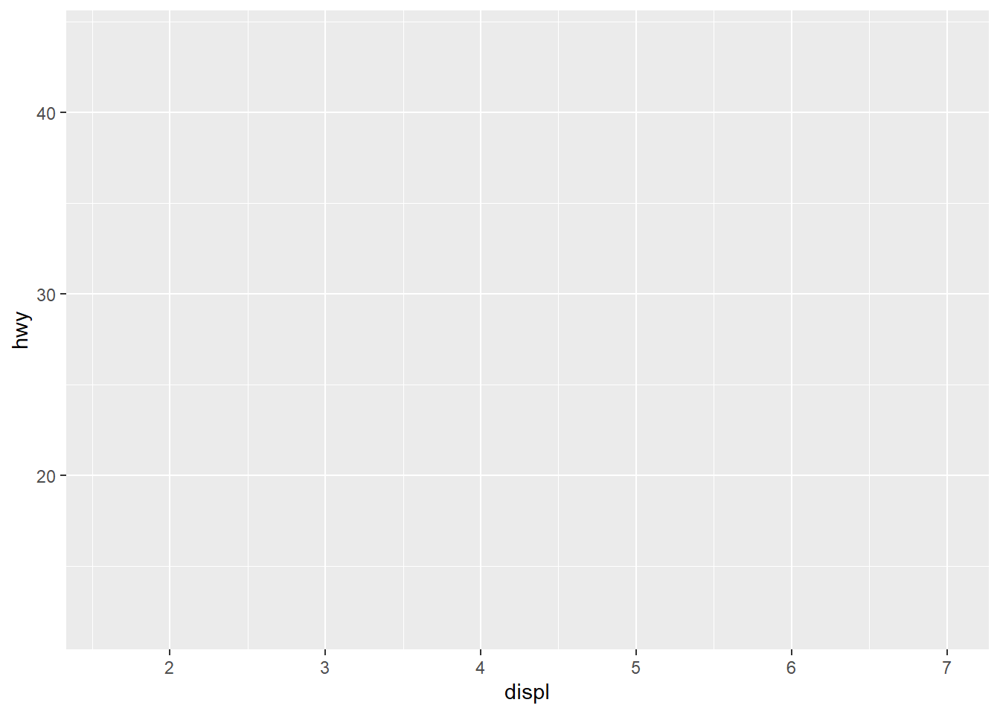
# The provided aes() were used by ggplot to generate a blank plot.
# We now need to tell how we want the data to be visualized in this plot with a geom() layer.
ggplot(mpg) +
aes(x=displ, y=hwy) +
geom_point()
That’s it! Now you know how to make a plot in R. Let’s look at a few more useful examples to add layers to make our graph prettier. First let’s add a second geom() layer on top of this graph to make it more informative.
# add a geom()
ggplot(mpg) +
aes(x=displ, y=hwy) +
geom_point() +
geom_smooth()
# let's add a color for the dots
ggplot(mpg) +
aes(x=displ, y=hwy) +
geom_point(colour = "green") +
geom_smooth(colour = "red")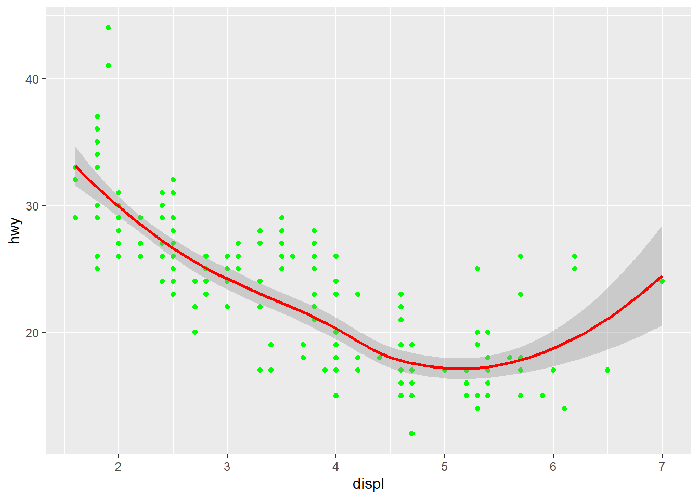
# perhaps we'd rather have the colour be based on a variable in the dataset.
# In this case the colour goes into an aes() function within the geom_point() function. like this:
ggplot(mpg) +
aes(x=displ, y=hwy) +
geom_point(aes(colour=class)) +
geom_smooth()
Choosing the right visualization for your data
The ggplot2 website provides a comprehensive list of the geoms and all the other functions that you can use with ggplot. You can can also click on any function listed to get more information, including the arguments that the function accepts or requires, as well as an example.
As you will see, there is a lot of things that you can do with ggplot. That’s because ggplot is meant to fulfill the needs of a large community of users working in completely different industries with completely different kinds of data and completely different objectives. Ideally, when you are attempting to visualize your data, you already have a pretty clear idea of what the data looks like and what you are trying to accomplish, so you can start by asking these few questions, so that you can identify the limited set of options that are relevant for your data and your goals. Figuring out your options “on paper” before jumping in the code will help guide you and protect you from information overload and potentially a lot of wasted time trying to create plots using geoms that simply do not work for you data. Here are the questions:
What question am I trying to answer with this plot?
How many variables do I want to visualize?
What type of variables do I want to visualize?
The directory of visualizations proposed by (wilke2019a?) is a great resource to help you think about this. You can also use the following table that lists geoms based on the number and types of data to be plotted.
| Variables | Typical graph |
|---|---|
| Single discrete | Bar chart |
| Single continuous | Histogram |
| two continuous | Scatter plot, line graph |
| Two discrete | Bar chart |
| One discrete, one continuous | Bar chart, box plot, dot plot |
Bar chart
ggplot(mpg) +
aes(manufacturer) +
geom_bar()
We can see that the names of the manufacturers overlap, so let’s fix that by giving a 45 degree angle to these labels.
ggplot(mpg) +
aes(manufacturer) +
geom_bar() +
theme(axis.text.x = element_text(angle = 45))
Histogram
ggplot(mpg) +
aes(hwy) +
geom_histogram()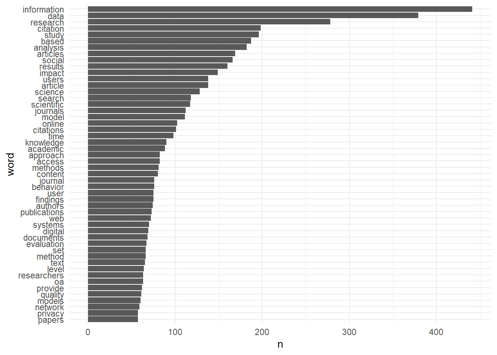
Scatter plot
The example we used earlier happens to be a good example of a scatter plot on which we added a trend line with the geom_smooth function.
ggplot(mpg) +
aes(x=displ, y=hwy) +
geom_point(aes(colour=class)) +
geom_smooth(method = "loess")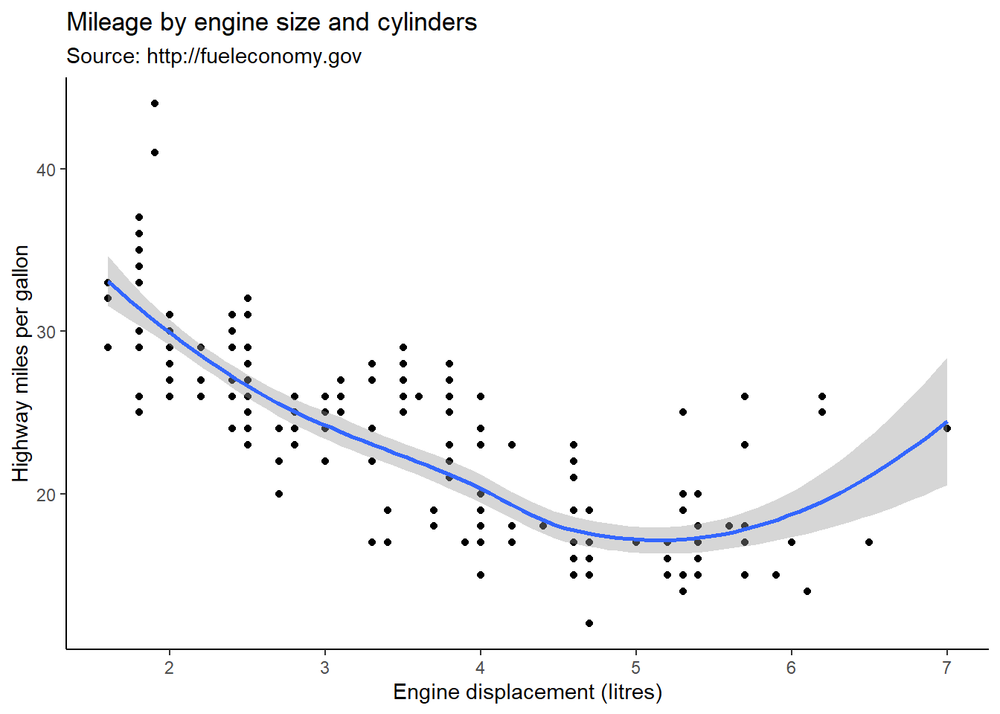
Line graph
xValue <- 1:10
yValue <- cumsum(rnorm(10))
data <- data.frame(xValue,yValue)
ggplot(data) +
aes(x=xValue, y=yValue) +
geom_line()
Box plot
ggplot(mpg) +
aes(x=manufacturer, y = hwy) +
geom_boxplot() +
theme(axis.text.x = element_text(angle = 45))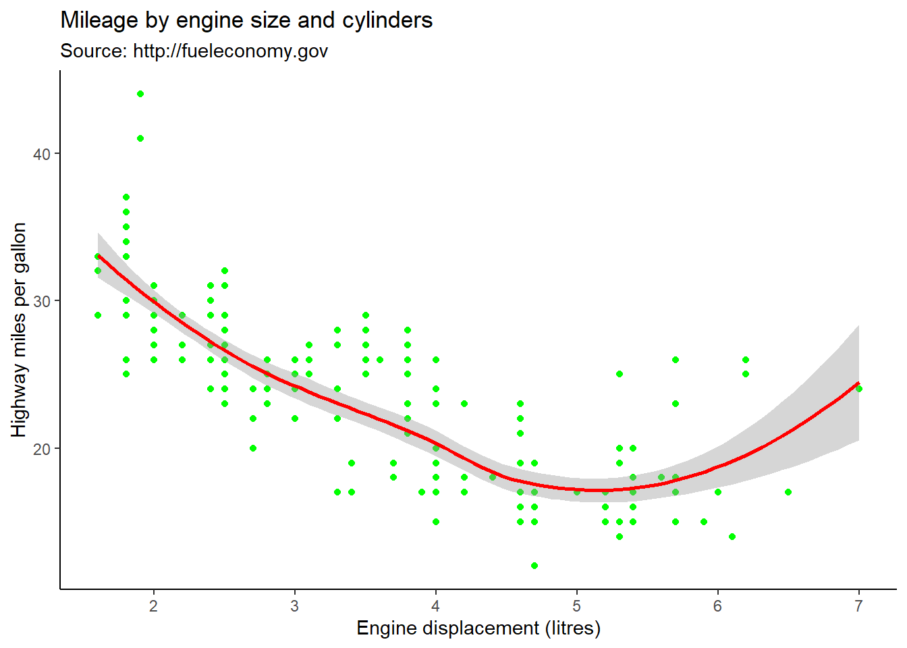
Jitter plot
ggplot(mpg) +
aes(x=manufacturer, y = hwy) +
geom_jitter(width=0.2)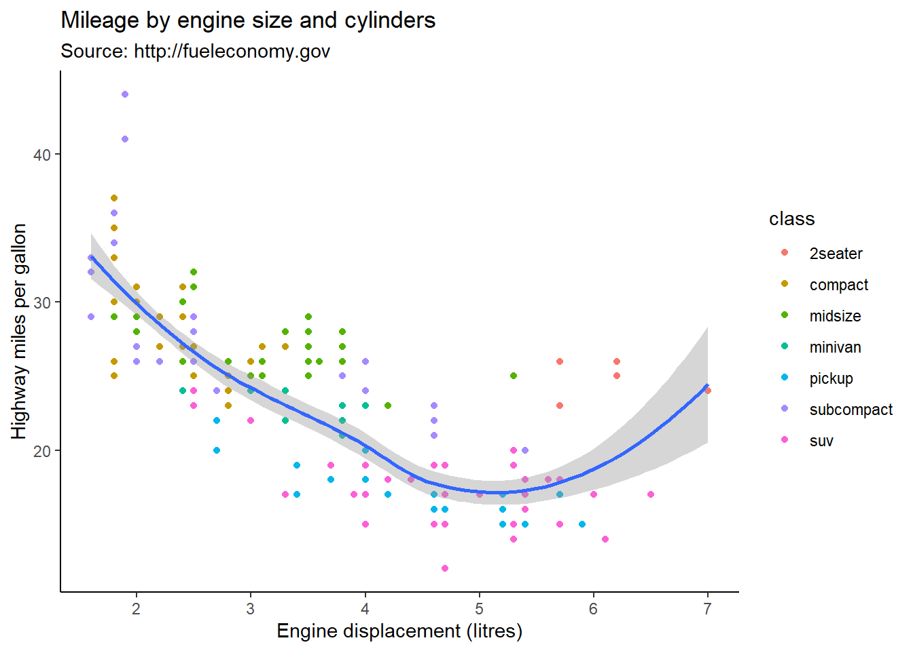
# you can also add the jitter plot on top of a box plot
ggplot(mpg) +
aes(x=manufacturer, y = hwy) +
geom_boxplot() +
theme(axis.text.x = element_text(angle = 45)) +
geom_jitter(width=0.2)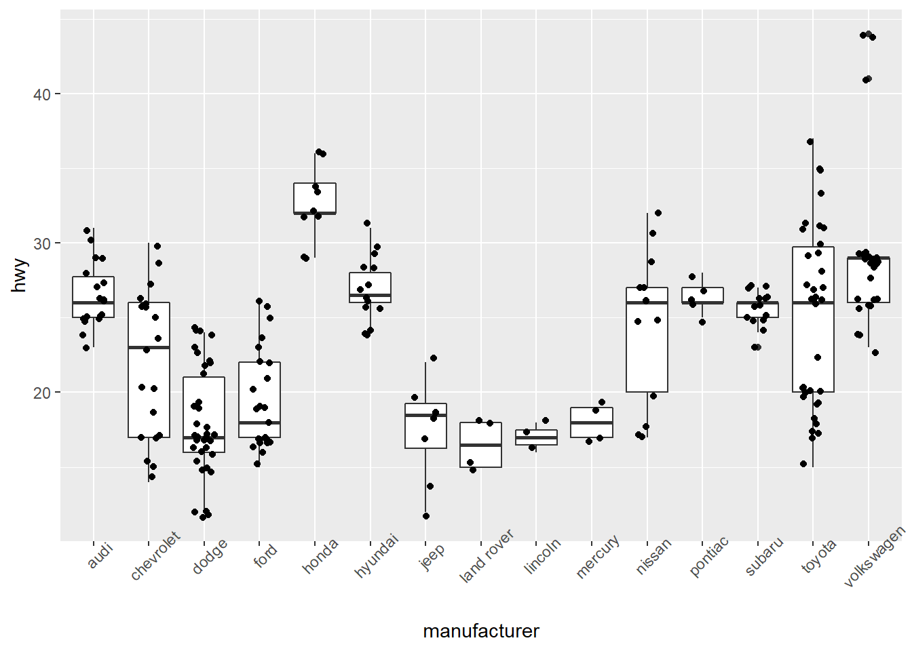
Facets
You may want to produce a distinct plot for each of your groups in order to have more space to show your data. For instance, the plot above is a vertical display of 15 different distributions. It’s space efficient and makes it easy to compare the distributions, but maybe you have space and would rather show a panel of 15 distributions using histograms, for instance. This is done with the facet_grid() and facet_wrap() functions.
ggplot(mpg, aes(hwy)) +
geom_histogram() +
facet_wrap(facets = "class", ncol=3)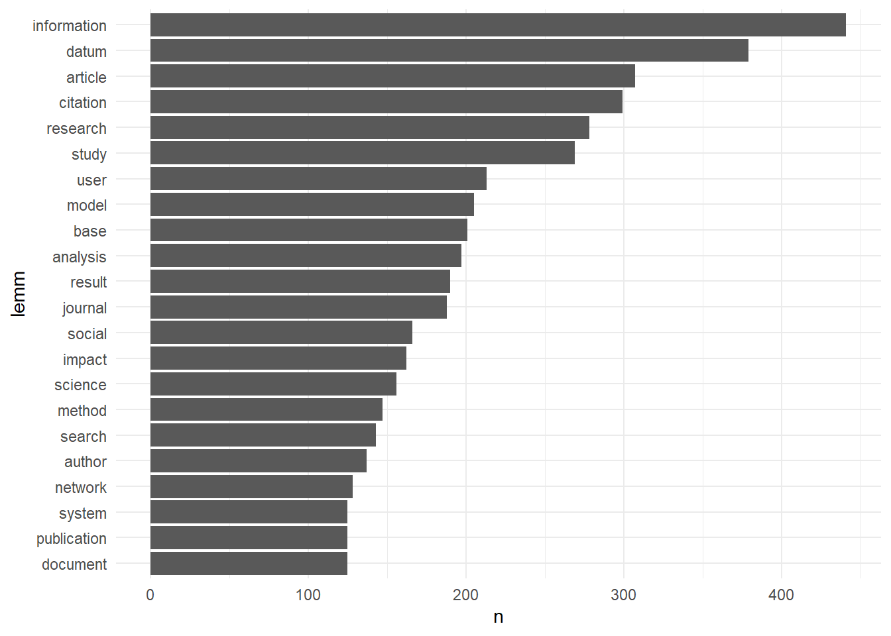
Making pretty figures
labels
ggplot(mpg) +
aes(x=displ, y=hwy, colour=class) +
geom_point() +
labs(
x = "Engine displacement (litres)",
y = "Highway miles per gallon",
title = "Mileage by engine size and cylinders",
subtitle = "Source: http://fueleconomy.gov"
)
Themes
When trying to design a graph that you like, you don’t have to start from scratch!
library(hrbrthemes)
library(ggthemes)
ggplot(mpg) +
aes(x=displ, y=hwy, colour=class) +
geom_point() +
labs( x = "Engine displacement (litres)",
y = "Highway miles per gallon",
title = "Mileage by engine size and cylinders",
subtitle = "Source: http://fueleconomy.gov"
) +
theme_clean() +
theme(
legend.background = element_rect(color = NA), # removes the legend border
legend.title.align = 0.5 # centres the legend title
) 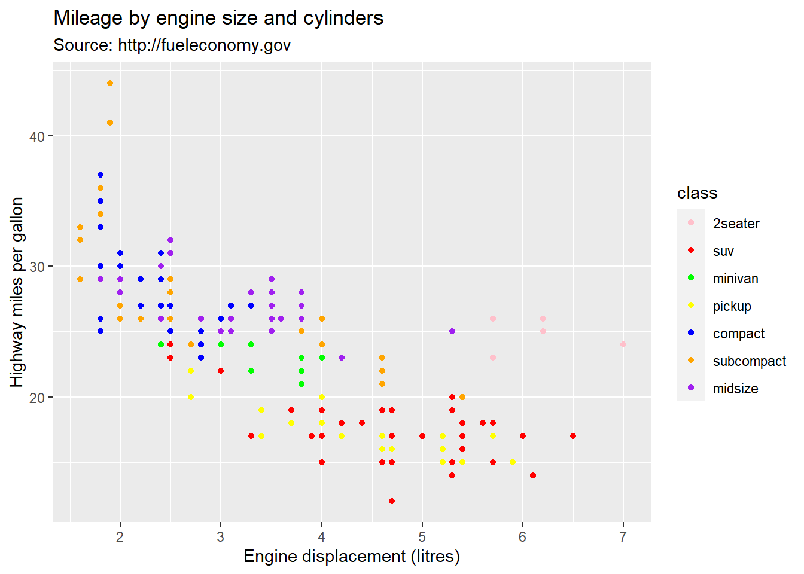
Adjusting axes scales and breaks
ggplot(mpg) +
aes(x=displ, y=hwy, colour=class) +
geom_point() +
labs( x = "Engine displacement (litres)",
y = "Highway miles per gallon",
title = "Mileage by engine size and cylinders",
subtitle = "Source: http://fueleconomy.gov"
) +
theme_clean() +
theme(
legend.background = element_rect(color = NA), # removes the legend border
legend.title.align = 0.5 # centres the legend title
) +
scale_x_continuous(limits = c(0,8), breaks = c(0,1,2,3,4,5,6,7,8))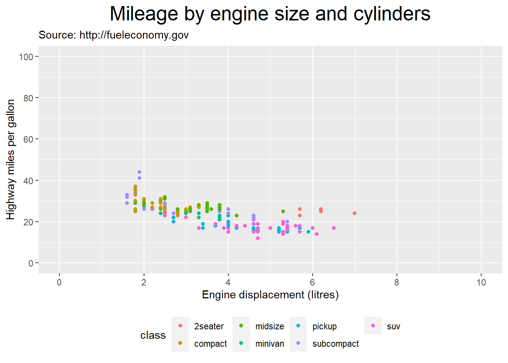
Colours
You can customize the colours in your graphs by using one of many available palettes or by setting the colours manually. Here is a great place to explore palettes and where to get them: https://emilhvitfeldt.github.io/r-color-palettes/discrete.html.
ggplot(mpg) +
aes(x=displ, y=hwy, colour=class) +
geom_point() +
labs( x = "Engine displacement (litres)",
y = "Highway miles per gallon",
title = "Mileage by engine size and cylinders",
subtitle = "Source: http://fueleconomy.gov"
) +
theme_clean() +
theme(
legend.background = element_rect(color = NA), # removes the legend border
legend.title.align = 0.5 # centres the legend title
) +
scale_x_continuous(limits = c(0,7), breaks = c(0,1,2,3,4,5,6,7)) +
scale_color_colorblind()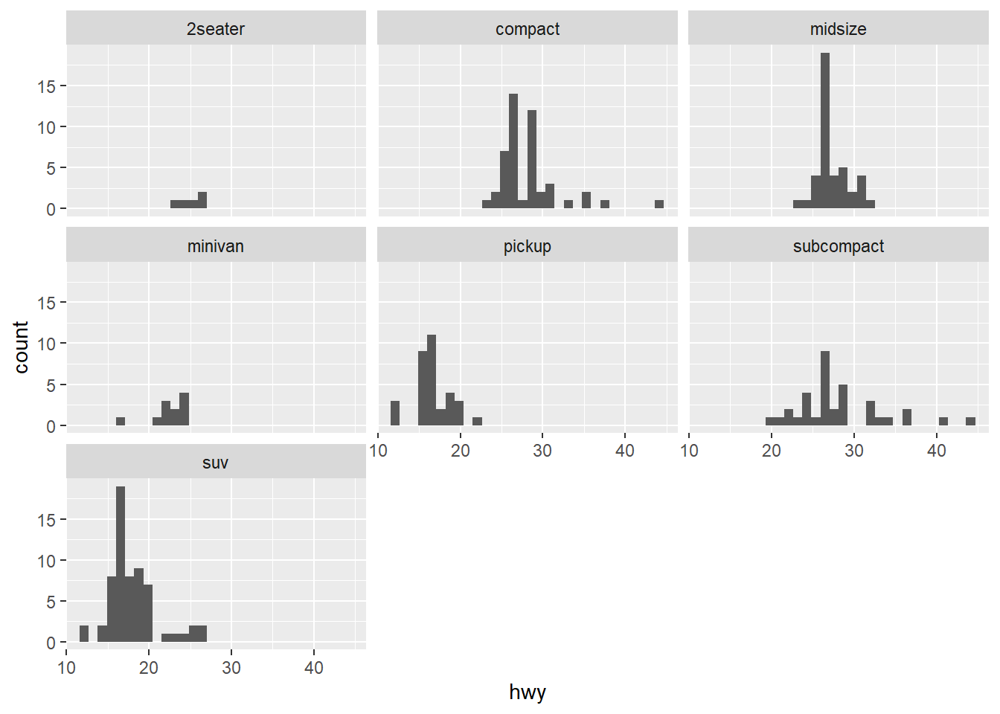
Here’s how you can specify the colours using scale_colour_manual(), or scale_fill_manual when working with continuous variables.
ggplot(mpg) +
aes(x=displ, y=hwy, colour=class) +
geom_point() +
labs( x = "Engine displacement (litres)",
y = "Highway miles per gallon",
title = "Mileage by engine size and cylinders",
subtitle = "Source: http://fueleconomy.gov"
) +
theme_clean() +
theme(
legend.background = element_rect(color = NA), # removes the legend border
legend.title.align = 0.5 # centres the legend title
) +
scale_x_continuous(limits = c(1,7), breaks = c(1,2,3,4,5,6,7)) +
scale_color_manual(values = c("blue","red","green","yellow","purple","orange","pink"))
The code above assigned assigned the colors in order (first group has first colour, second group as second colour, etc.). You can also specify the group colors like this:
ggplot(mpg) +
aes(x=displ, y=hwy, colour=class) +
geom_point() +
labs( x = "Engine displacement (litres)",
y = "Highway miles per gallon",
title = "Mileage by engine size and cylinders",
subtitle = "Source: http://fueleconomy.gov"
) +
theme_clean() +
theme(
legend.background = element_rect(color = NA), # removes the legend border
legend.title.align = 0.5 # centres the legend title
) +
scale_x_continuous(limits = c(1,7), breaks = c(1,2,3,4,5,6,7)) +
scale_color_manual(values = c("2seater" = "pink",
"suv"="red",
"minivan" = "green",
"pickup" = "yellow",
"compact" = "blue",
"subcompact" = "orange",
"midsize"="purple"))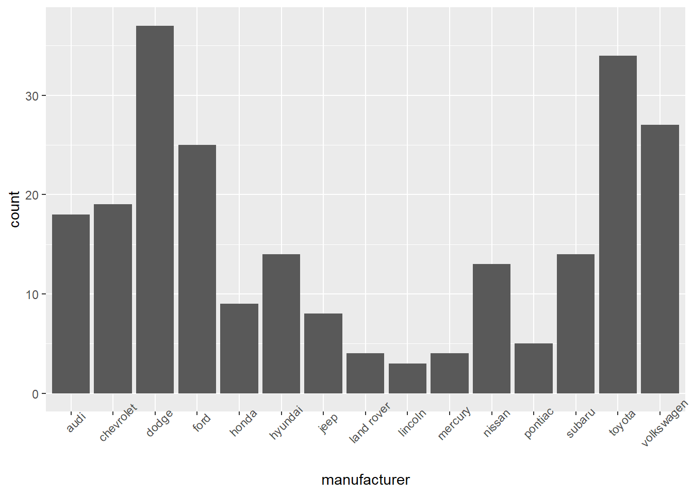